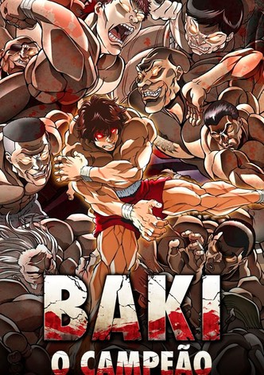

-

Baki
"Baki the Grappler" ou "Grappler Baki" é uma série de anime e mangá criada por Keisuke Itagaki. Foi originalmente publicada na Weekly Shōnen Champion de 1991 a 1999, em 42 volumes.
Mais info -

Yu Yu Hakusho
A história segue as aventuras sobrenaturais do jovem delinquente Yusuke Urameshi, que se torna um detetive espiritual.
Mais info -

A Lenda de Korra
Korra é uma jovem impetuosa e rebelde da Tribo da Água do Sul, que já domina três dos quatro elementos (água, terra e fogo) e busca aprender a dominar o elemento final, o ar.
Mais info -

Lookism
Em Lookism, o protagonista se vê saindo do fundo do poço até o topo do universo quando, por alguma aleatoriedade do destino, ele acorda em outro corpo.
Mais info -

Boruto
Boruto Uzumaki é o personagem principal do anime e mangá "Boruto: Naruto Next Generations". Ele é o filho mais velho de Naruto Uzumaki, o protagonista da série anterior "Naruto.
Mais info